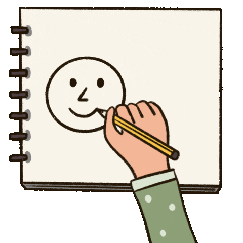

My life as a student was simple. but I am grateful because Allah SWT has given me many pleasures in life after many struggles that I have gone through during my studies from pre-school until I studied at uitm. My individual ability to grow and learn is constantly changing as I grow. So as a student, I will continue to try to do my best, even though there are many upcoming tests. No one is perfect in this world. All have their own shortcomings. The success is very broad. So as long as we strive and are always motivated to succeed, it will always be in the right direction. My strength is that, as long as I was in high school, I would always finish everything on time. Time is gold, and as a student, I need to be smart to organise and make good use of it. We have to learn from our mistakes. Failure is a common thing. because that is what life is called. Life is not always going to be beautiful. So you have to work hard and stay strong until you reach great success. Inshallah, one day we will be able to see how beautiful that success is. At that time, what about our feelings after being able to build a very beautiful happiness? The result of our sweat and struggle, no matter how many years we studied, finally became a reality. It's okay if we are not smart and have many shortcomings, as long as we always find a way to make our lives more meaningful and learn how to be successful people. We should move to make better decisions in this life.
This is a picture of me graduating from preschool. Before I entered high school, I passed the UPSR exam at Sekolah Kebangsaan Kepala Batas. After that, I successfully entered my dream secondary school, which is Sekolah Menengah Kebangsaan Datuk Haji Ahmad Badawi, and I sat for the Pt3 exam in 2016 and the SPM exam in 2018. Alhamdulillah, I studied there for 5 years. I am struggling because I really want to pursue my dream course at my beloved university, UITM (Universiti Teknologi Mara) A few months after that, I applied for my dream course for a diploma, but unfortunately, I was rejected at first. I tried again but chose a different course, and Alhamdulillah, now I am a final-year student of the Diploma in Library Management at UiTM Cawangan Kedah.

and remember one thing, "Don't study hard but study smart". I wish you all the best of luck.